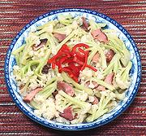

|
Cauliflower with BaconChina - Sichuan | ||||
| Serves: Effort: Sched: DoAhead: |
5 side *** 45 min Prep |
A side dish delicious enough to be a light main dish. The photo example used Chinese cauliflower, but others can be used (see Comments. This dish would be just as fine on a Western menu as Chinese. | |||
|
1 4 2 2 2 2 1-1/4 1/2 1/4 |
# oz cl t T T c t t |
Cauliflower (1) Bacon, smoked (2) Garlic Potato Starch Water Oil / Lard Stock (3) Salt Pepper |
Prep - (20 min)
|